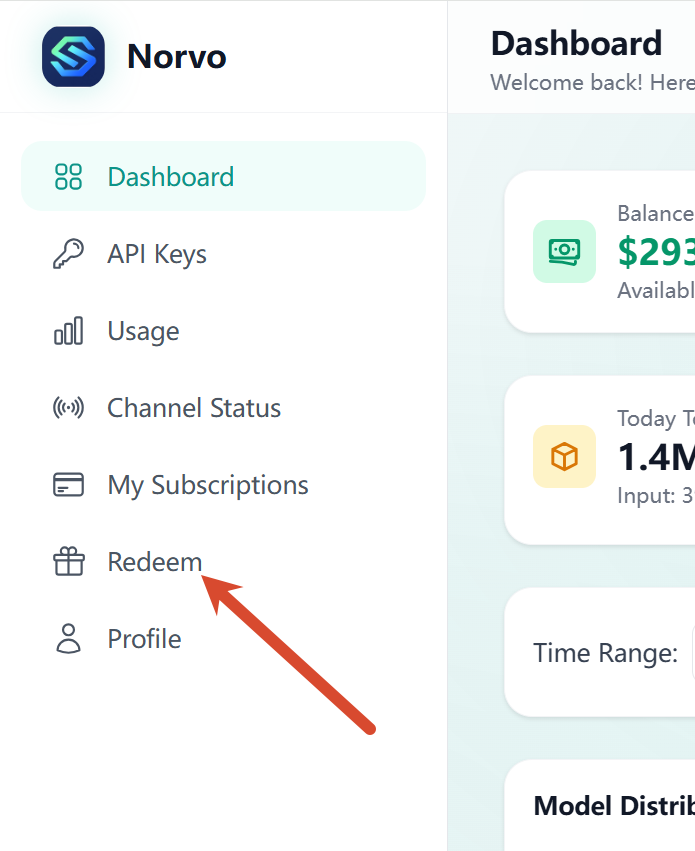
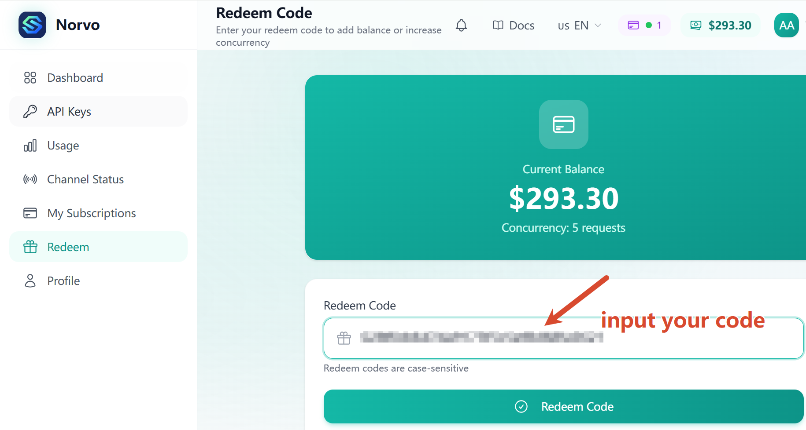
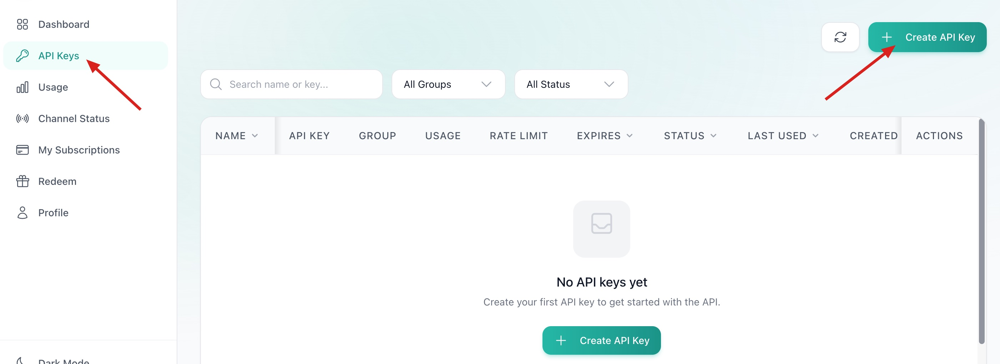
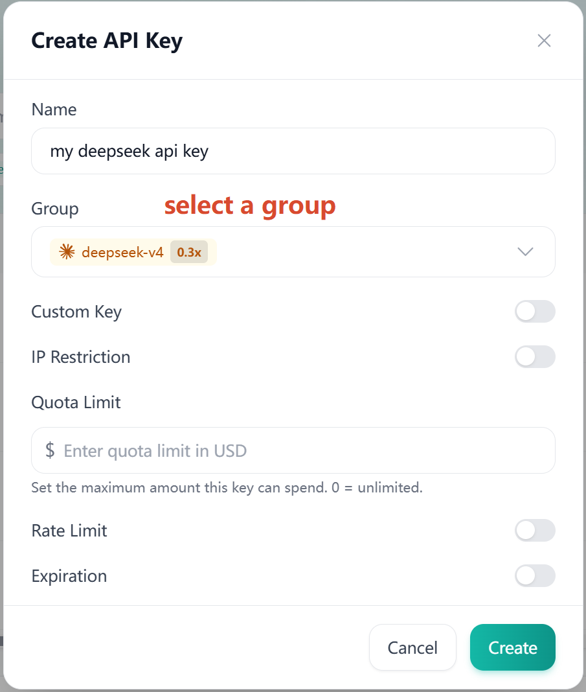
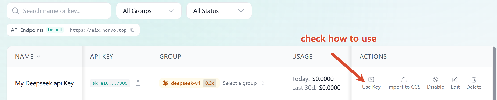
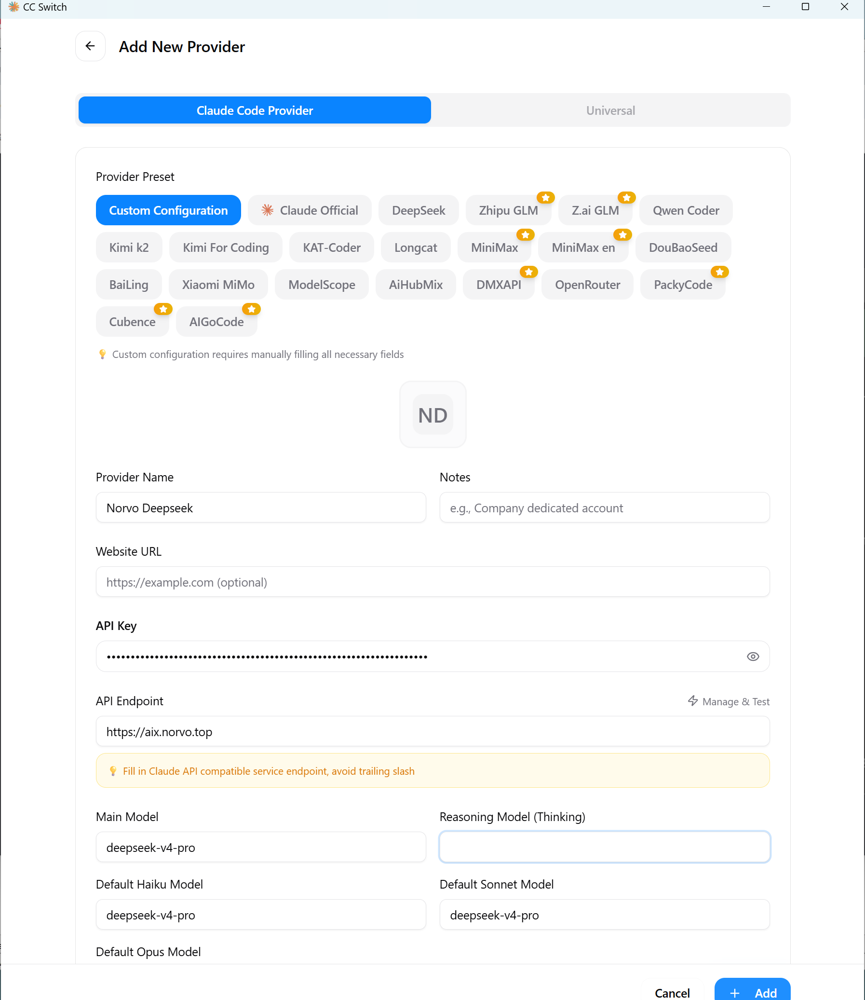
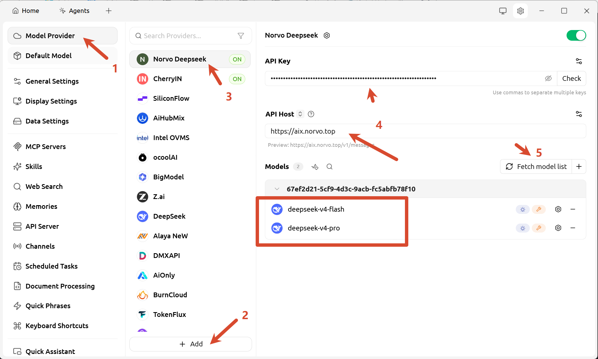
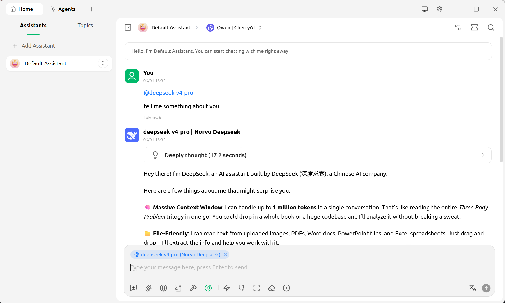

Norvo AI User Guide
Anthropic/OpenAI-compatible API. Just change the base URL and API key to get started.
Configuration Overview
| Group | Protocol | OpenAI Compatibility | Supported Models |
|---|---|---|---|
deepseek-v4 |
Anthropic | Supports Chat and Responses | deepseek-v4-pro, deepseek-v4-flash |
kimi-k2.6 |
Anthropic | Not supported | kimi-k2.6 |
glm-5.1 |
Anthropic | Supports Chat, does not support Responses | glm-5.1 |
codex-*** / gpt-*** |
OpenAI | Natively supported | gpt-5.5, gpt-5.4, gpt-image-2, etc. |
Getting Started
Follow these steps to redeem your code and create an API key.
1Access Redeem Page
Log in to the platform and navigate to the redeem page from the navigation menu.

2Enter Redeem Code
Input your redeem code in the designated field and click the redeem button to activate your account balance.

3Create API Key
After redeeming, go to the API Keys section and Click create API key.

Give it a name and select a group you want to use, then click Create. Your API key will be displayed. Copy and save it securely - you'll need it for API calls.

5How to Use
Use your API key in your code. Set the base URL to https://aix.norvo.top and include your API key in the authorization header.

Quick Start
Python
from openai import OpenAI
client = OpenAI(
base_url="https://aix.norvo.top",
api_key="YOUR_API_KEY"
)
response = client.chat.completions.create(
model="deepseek-v4-pro",
messages=[{"role": "user", "content": "Hello!"}]
)
print(response.choices[0].message.content)cURL
curl https://aix.norvo.top/chat/completions \ \
-H "Content-Type: application/json" \
-H "Authorization: Bearer YOUR_API_KEY" \ \
-d '{
"model": "deepseek-v4-pro",
"messages": [{"role": "user", "content": "Hello!"}]
}'Node.js
import OpenAI from "openai";
const client = new OpenAI({
baseURL: "https://aix.norvo.top",
apiKey: "YOUR_API_KEY",
});
const response = await client.chat.completions.create({
model: "deepseek-v4-pro",
messages: [{ role: "user", content: "Hello!" }],
});
console.log(response.choices[0].message.content);Tool Integration
Claude Code
Claude Code is an AI coding assistant that runs in the terminal.
Install Claude Code CLI from https://github.com/anthropics/claude-code.
Linux / Mac:
export ANTHROPIC_BASE_URL=https://aix.norvo.top
export ANTHROPIC_AUTH_TOKEN=<your API Key>
export ANTHROPIC_MODEL=deepseek-v4-pro
export ANTHROPIC_DEFAULT_OPUS_MODEL=deepseek-v4-pro
export ANTHROPIC_DEFAULT_SONNET_MODEL=deepseek-v4-pro
export ANTHROPIC_DEFAULT_HAIKU_MODEL=deepseek-v4-pro
export CLAUDE_CODE_SUBAGENT_MODEL=deepseek-v4-pro
export CLAUDE_CODE_EFFORT_LEVEL=maxWindows PowerShell:
$env:ANTHROPIC_BASE_URL="https://aix.norvo.top"
$env:ANTHROPIC_AUTH_TOKEN="<your API Key>"
$env:ANTHROPIC_MODEL="deepseek-v4-pro"
$env:ANTHROPIC_DEFAULT_OPUS_MODEL="deepseek-v4-pro"
$env:ANTHROPIC_DEFAULT_SONNET_MODEL="deepseek-v4-pro"
$env:ANTHROPIC_DEFAULT_HAIKU_MODEL="deepseek-v4-pro"
$env:CLAUDE_CODE_SUBAGENT_MODEL="deepseek-v4-pro"
$env:CLAUDE_CODE_EFFORT_LEVEL="max"Then enter your project directory and run Claude Code:
cd /path/to/my-project
claudedeepseek-v4-flash, kimi-k2.6, or glm-5.1. Make sure your API key matches the model you use.
Claude Code via CC-Switch
Install CC-Switch from https://github.com/farion1231/cc-switch.
- Select Claude tab panel
- Click the + icon to add a new provider
- Set Provider Preset to Custom Configuration
- Enter a provider name, for example
Norvo Deepseek - Set API Endpoint to
https://aix.norvo.top, then paste your API key - Set all model inputs to
deepseek-v4-proor another supported model name - Click `+ Add`
Then enter your project directory and run Claude Code:
cd /path/to/my-project
claude
Codex via CC-Switch
Install Codex CLI from https://github.com/openai/codex.
Install CC-Switch from https://github.com/farion1231/cc-switch.
- Select Codex tab panel
- Click the + icon to add a new provider
- Set Provider Preset to Custom Configuration
- Enter a provider name, for example
Norvo gpt - Set API Endpoint to
https://aix.norvo.top, then paste your API key - Set model to
gpt-5.4orgpt-5.5or another supported model name - Click `+ Add`
Then enter your project directory and run Codex:
cd /path/to/my-project
codexCherry Studio
Install it from https://github.com/CherryHQ/cherry-studio.
- Go to Settings → Model Provider
- Click "+ Add"
- Enter a name, choose Anthropic or OpenAI as the protocol type, then click OK
- Select the provider you just created. Set API Host to
https://aix.norvo.top, then paste your API key - Click Fetch model list and add the models shown in the list
- Go to Home, create an assistant or topic, select a model via
@under the input box, and start using it


Common Errors
| Status | Message | Fix |
|---|---|---|
| 401 | Unauthorized | Check your Authorization header |
| 429 | Too Many Requests | Reduce request frequency, retry with backoff |
| 502 | Bad Gateway | Retry in a few seconds |
| 504 | Gateway Timeout | Reduce max_tokens or try a different model |